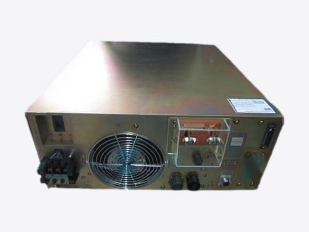

光刻（曝光・涂胶显影・量测）
光刻机・涂胶显影・量测设备，一个窗口统一对接。
面向 ASML、Nikon、Canon、TEL、Hitachi 等厂商的光刻机、涂胶显影设备及量测设备，通过技术合作伙伴及合作公司提供零部件维修、电路板（PCB）维修、翻新及保养服务（可否及范围按项目逐一确认）。
光刻（曝光・涂胶显影・量测）
光刻机、涂胶显影设备、量测设备维修保养服务
我们通过技术合作伙伴及合作公司，承接光刻机、涂胶显影设备、量测设备及其周边设备的零部件维修、电路板维修、翻新（再生整备）与保养。所有委托统一由二九TECH 对接，服务范围按项目逐一确认。
 ASML PAS 5500 照明系统电源、灯电源控制板
ASML PAS 5500 照明系统电源、灯电源控制板 ASML 掩模版库模块（MK2／MKIV）
ASML 掩模版库模块（MK2／MKIV） ASML TWINSCAN SMASH、4CLMA 对准用激光模块（532／635／780／850 nm）
ASML TWINSCAN SMASH、4CLMA 对准用激光模块（532／635／780／850 nm） ASML TWINSCAN 高分辨率编码器板（HERB）
ASML TWINSCAN 高分辨率编码器板（HERB） ASML PAS 5500 Dipod 单元／Dipod 霍尔组件
ASML PAS 5500 Dipod 单元／Dipod 霍尔组件 Nikon NSR 干涉仪用激光头（HP 5517A／B／C／D／DL）
Nikon NSR 干涉仪用激光头（HP 5517A／B／C／D／DL） Nikon NSR 步进光刻机照明光学部件（G1／G2 反射镜、输入／聚光透镜、i 线滤光片、R/A 组件）
Nikon NSR 步进光刻机照明光学部件（G1／G2 反射镜、输入／聚光透镜、i 线滤光片、R/A 组件）
Nikon 超高压汞灯 稳压电源（4S990-550AN） 光刻机载台用 放大器、直线电机驱动器（WX AMP、TC AMP、RS 短行程）
光刻机载台用 放大器、直线电机驱动器（WX AMP、TC AMP、RS 短行程） KLA-Tencor Surfscan SP1 电气部件（旋转电机驱动器、主轴分配板、DF 模拟板、电源）
KLA-Tencor Surfscan SP1 电气部件（旋转电机驱动器、主轴分配板、DF 模拟板、电源） 日立 测长 SEM（CD-SEM）维护、维修
日立 测长 SEM（CD-SEM）维护、维修 Canon FPA 步进光刻机／扫描光刻机（翻新设备）
Canon FPA 步进光刻机／扫描光刻机（翻新设备）光刻机（步进式／扫描式）
- ASML PAS 5500 系列：控制电路板，晶圆传输（Wafer Handler）、工件台类及照明系统（Illuminator）单元，干涉仪激光头的维修
- ASML PAS 5500 系列：定期保养（PM）、维修、装机／移机、零部件供应（可否及范围按项目逐一确认）
- ASML TWINSCAN：编码器电路板、对准用激光器、工件台部件（Chuck Clamp、柔性电缆）、掩模版库（Reticle Library）等的单元级维修（可否及范围按项目逐一确认）
- Nikon NSR 步进式光刻机（g 线 G7／G8 系列、i 线 i 系列）及扫描式光刻机（S 系列）：LS 中继放大器（Relay AMP）、对准用及干涉仪用激光器、CPU 板及驱动板的维修
- Canon FPA i 线步进式光刻机（FPA-3000i4／i5 等）及 MPA（镜面投影对准曝光机）：零部件维修（含干涉仪激光头）
- Ultratech 步进式光刻机（1000～1500 系列）：伺服电机及工件台部件的供应与维修；Perkin-Elmer Micralign：零部件需求欢迎咨询（可否及范围按项目逐一确认）
- 翻新光刻机采购：Canon FPA 系列（i 线／KrF）、Nikon NSR i 线步进式光刻机等（库存、规格及装机范围按项目逐一确认）
涂胶显影设备（Coater／Developer）
- TEL CLEAN TRACK（MARK 系列～ACT 系列）：零部件维修、电路板维修
- TEL CLEAN TRACK（MARK、ACT、LITHIUS 系列）、SCREEN（原 DNS）RF³ 等：150／200／300 mm（6／8／12 英寸）设备的翻新及翻新设备采购（可否及范围按项目逐一确认）
- 翻新设备：改造、升级需求欢迎咨询（可否及范围按项目逐一确认）
量测设备（CD-SEM・套刻・膜厚）
- 日立高新（Hitachi）关键尺寸扫描电镜（CD-SEM；S-8000／S-9000 系列、CG4000 等）：零部件供应、维修、翻新（可否及范围按项目逐一确认）
- 套刻量测设备：KLA-Tencor 5100／5200／5300 的零部件维修（控制电路板等）及翻新；KLA-Tencor Archer 的激光尺（Laser Scale）维修；Overlay Q200／Q220／Q230／Q240 的零部件维修（可否及范围按项目逐一确认）
- 膜厚量测设备（Nanometrics NanoSpec、Atlas、QS 系列〔FTIR〕，Nova i500）：零部件维修、翻新、改造、PM、故障诊断
- 其他量测设备（Therma-Wave Opti-Probe OP2600、OP3290 DUV，Rudolph FOCUS、S200／S300，KLA-Tencor UV 系列、Prometrix）：翻新、装机／移机、校准、PM
周边设备・单元
- MKS Baratron 电容薄膜真空计（Capacitance Manometer，用于光刻、CVD、PVD、刻蚀设备）：故障诊断、维修、校准（校准报告的出具及溯源条件按项目逐一确认）、定期保养（PM）
- MKS Baratron 622／623／625～629／631、722／727／728／740、E27H／E28H／E29H 等（加热型、非加热型）及 MKS 902 系列（压阻式）：对于无法维修或已停产的产品，推荐后继型号或市售替代型号（须经贵司批准后方可采用）
- 周边单元：Asyst SMIF 控制电路板及风扇、传送机器人（Brooks、Rorze、安川电机、川崎重工）、冷水机（Chiller）、高压电源、涡轮分子泵的维修（可否及范围按项目逐一确认）
相关作业通过二九TECH 的技术合作伙伴及合作公司实施。服务范围、交期及保修条件按项目逐一确认，并在报价中列明。维修品及翻新品并非 OEM 原厂认证产品。如需使用非原厂替换零部件，将在报价时明确说明，并在取得贵司批准后方可使用。文中所列厂商名称及型号仅用于标明对象设备，并不代表与相关厂商存在合作或授权关系，亦并非 OEM 原厂服务。文中所列公司名称及产品名称均为各公司的商标或注册商标。